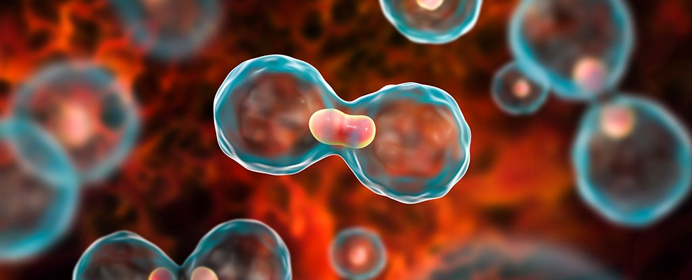
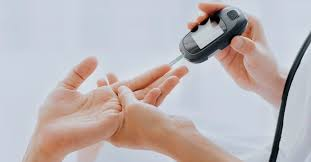
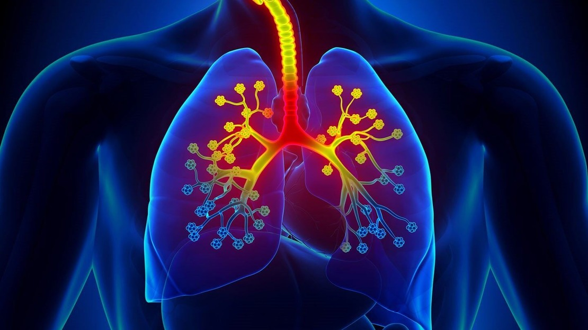
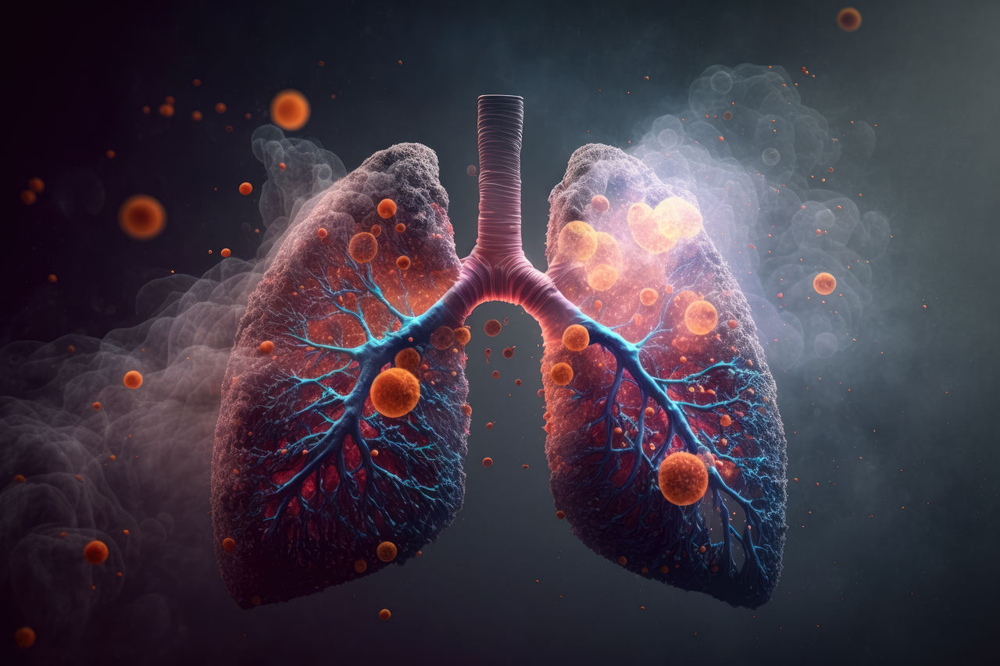

🦠 What is COVID-19?
COVID-19 (Coronavirus Disease 2019) is an infectious disease caused by the SARS-CoV-2 virus, a novel coronavirus that emerged in late 2019 in Wuhan, China. It spread rapidly worldwide, leading to a global pandemic declared by the WHO in March 2020.
⚠️ Symptoms of COVID-19
Common symptoms:
Fever, Dry cough, Fatigue, Sore throat, Shortness of breath, Loss of taste or smell
Less common symptoms:
Headache, Muscle or joint pain, Chills, Nasal congestion, Diarrhea, Skin rash
Severe symptoms (require immediate medical attention):
Difficulty breathing, Chest pain or pressure, Loss of speech or mobility, Confusion
🛡️ Precautions and Preventive Measures
- 1. 😷 Wear a Mask – Especially in crowded places
- 2. Maintain Social Distance – At least 1 meter
- 3. Wash Hands Frequently – With soap for 20s
- 4. Use Hand Sanitizer – At least 60% alcohol
- 5. Avoid Touching Face
- 6. Disinfect Surfaces Regularly
- 7. Stay Home if Unwell
- 8. Ensure Ventilation Indoors
💊 Treatment and Cure
1. Home care: Rest, hydration, isolation, fever management
2. Hospital care: Oxygen therapy, antivirals, anti-inflammatory drugs, ventilation
💉 COVID-19 Vaccines
mRNA: Pfizer, Moderna
Viral Vector: Covishield, Johnson & Johnson
Inactivated: Covaxin, Sinopharm, Sinovac
Protein Subunit: Novavax
🧬 Variants of Concern
Alpha (UK), Beta (South Africa), Gamma (Brazil), Delta (India), Omicron & its subvariants (BA.1 to XBB)


❤️ What is Heart Disease?
Heart disease refers to a range of conditions that affect the heart and blood vessels. It's one of the leading causes of death globally. It typically involves narrowed or blocked blood vessels, which can lead to a heart attack, stroke, or chest pain (angina).
🧬 Types of Heart Disease
- Coronary Artery Disease (CAD):
Plaque buildup in the arteries leading to chest pain or heart attack - Heart Arrhythmia:
Irregular heartbeat — includes Atrial fibrillation, Bradycardia, Tachycardia - Heart Failure: Inefficient pumping, often caused by CAD or high BP
- Congenital Heart Disease:
Structural defects from birth - Cardiomyopathy:
Disease of the heart muscle due to genetics or infections - Heart Valve Disease:
Valves fail to open/close properly - Pericarditis:
Inflammation of the heart lining
⚠️ Common Symptoms
- 1. Chest pain (angina), Shortness of breath, Fatigue
- 2. Swelling in legs/ankles, Irregular heartbeat, Dizziness
- 3. Heart attack signs: Pain in chest/arms/jaw/back, Cold sweat, Difficulty breathing
- 4. ⚠️ Women may feel indigestion, fatigue, or anxiety
🩺 Causes and Risk Factors
- 1. High blood pressure, High cholesterol, Smoking, Diabetes
- 2. Obesity, Lack of exercise, Poor diet, Stress, Family history
🛡️ Precautions & Prevention
- 1. Eat healthy, exercise regularly
- 2. Quit smoking, limit alcohol
- 3. Manage stress and sleep well
- 4. Get regular health check-ups
💉 Is there a Vaccine for Heart Disease?
No direct vaccine yet. Flu and Pneumonia vaccines are recommended for heart patients. Research is ongoing for vaccines against atherosclerosis and cholesterol.
💊 Treatment Options
- 1. Lifestyle:
Diet, exercise, quitting smoking - 2. Medications:
BP meds, statins, aspirin, diuretics, anti-arrhythmics - 3. Procedures:
Angioplasty, stents, bypass surgery, pacemaker, transplant
🧠 Difference Between Heart Attack, Cardiac Arrest, and Stroke
| Term | What Happens? | Urgency |
|---|---|---|
| Heart Attack | Blocked blood to heart | Yes – Medical emergency |
| Cardiac Arrest | Heart stops beating suddenly | Immediate CPR needed |
| Stroke | Blocked or burst blood vessel in brain | Emergency |


🎗️ What is Cancer?
Cancer is a disease in which some of the body’s cells grow uncontrollably and spread to other parts of the body.
Normally, cells grow and divide in a controlled way. But with cancer, cells keep dividing and may form a mass called a tumor (except in blood cancers like leukemia). If not treated, it can spread (metastasize) and damage vital organs.
🧬 Types of Cancer (Major Categories)
- Carcinoma:
Begins in skin or tissues lining internal organs
Common types: Lung, Breast, Colon, Prostate - Sarcoma:
Affects bones, muscles, fat, or connective tissues - Leukemia:
Cancer of the blood and bone marrow (doesn't form solid tumors) - Lymphoma:
Begins in lymphatic system (e.g., Hodgkin and non-Hodgkin lymphoma) - Myeloma:
Cancer of plasma cells in bone marrow - Central Nervous System Cancers:
Brain and spinal cord tumors
🔍 Common Cancer Types
| Cancer Type | Main Areas Affected |
|---|---|
| Breast Cancer | Breasts (mainly in women) |
| Lung Cancer | Lungs (smokers at high risk) |
| Prostate Cancer | Prostate gland (men) |
| Colorectal Cancer | Colon or rectum |
| Skin Cancer | Skin (Melanoma most serious) |
| Cervical Cancer | Cervix (women) |
| Leukemia | Blood |
| Brain Tumors | Brain or nervous system |
⚠️ Symptoms of Cancer
- 1. Unexplained weight loss
- 2. Persistent fatigue
- 3. Lumps or thickened areas under skin
- 4. Changes in bowel/bladder habits
- 5. Sores that don’t heal
- 6. Difficulty swallowing
- 7. Persistent cough or hoarseness
- 8. Unusual bleeding or discharge
- 9. Skin changes (moles that change)
Note: Not all symptoms mean cancer, but they shouldn’t be ignored.
🧪 Causes & Risk Factors
| Category | Examples |
|---|---|
| Genetics | Family history, inherited mutations |
| Lifestyle | Smoking, alcohol, poor diet, lack of activity |
| Environment | Radiation, pollution, workplace chemicals |
| Infections | HPV, Hepatitis B/C, H. pylori |
| Age | Risk increases with age |
🛡️ Prevention (How to Reduce Your Risk)
- Avoid Tobacco 🚭: Major cause of many cancers
- Healthy Diet 🥗: More fruits, vegetables; less red/processed meat
- Exercise Regularly 🏃: At least 30 mins/day
- Limit Alcohol 🍷: Lower intake reduces risk
- Protect Skin from Sun ☀️: Use sunscreen, avoid tanning beds
- Get Vaccinated 💉: HPV (cervical cancer), Hepatitis B (liver)
- Screenings 🩺: Regular checkups for early detection
- Avoid Risky Behaviors: Use protection, avoid sharing needles
💉 Cancer Vaccines
- 1. Preventive Vaccines:
- HPV Vaccine (Gardasil, Cervarix): Prevents cervical, anal, throat cancers
- Hepatitis B Vaccine: Prevents liver cancer linked to Hep B infection
- 2. Therapeutic (under research/use):
- Sipuleucel-T (Provenge) – for prostate cancer
- Ongoing research for melanoma, lung, breast cancer
💊 Cancer Treatments
- 1. Surgery: Removes tumors or cancerous tissue
- 2. Radiation Therapy: Uses high-energy rays to kill cancer cells
- 3. Chemotherapy: Drugs to destroy cancer cells
- 4. Immunotherapy: Boosts body’s immune system
- 5. Targeted Therapy: Targets cancer cells specifically
- 6. Hormone Therapy: Blocks hormones that fuel some cancers
- 7. Stem Cell/Bone Marrow Transplant: Replaces damaged marrow (e.g., leukemia)
🎯 Treatment plans are personalized based on type, stage, and overall health.
🧭 Staging of Cancer
- Stage 0: Early, localized (pre-cancerous)
- Stage I: Small tumor, hasn't spread
- Stage II & III: Larger, may involve nearby tissues or lymph nodes
- Stage IV: Advanced; spread to distant organs (metastasis)


Diabetes Mellitus
Diabetes mellitus is a chronic (long-lasting) condition that affects how your body turns food into energy. It happens when the body doesn’t make enough insulin or can’t use insulin properly, causing high blood sugar (glucose) levels.
🧬 Types of Diabetes
- Type 1 Diabetes
Autoimmune disease; usually diagnosed in youth; requires insulin injections; not preventable. - Type 2 Diabetes
Most common (90–95%); linked to lifestyle; often reversible. - Gestational Diabetes
Occurs during pregnancy; disappears after childbirth; increases Type 2 risk. - Prediabetes
Warning sign; reversible with lifestyle changes.
⚠️ Common Symptoms
| General Signs | Type-Specific Notes |
|---|---|
| Frequent urination | Common in all types |
| Excessive thirst | Common in all types |
| Extreme fatigue | Especially in uncontrolled diabetes |
| Blurred vision | May be a warning sign |
| Increased hunger | Even after eating |
| Slow-healing sores | Especially in Type 2 |
| Tingling or numbness | Especially hands/feet (Type 2) |
| Unexplained weight loss | Often in Type 1 |
🔎 Causes & Risk Factors
| Type | Causes |
|---|---|
| Type 1 | Autoimmune destruction of insulin-producing cells (genetic + unknown triggers) |
| Type 2 | Poor diet, inactivity, obesity, genetics, age |
| Gestational | Hormonal changes during pregnancy |
| Prediabetes | Same risks as Type 2 |
🧪 How is Diabetes Diagnosed?
- 1. Fasting Blood Sugar Test
- 2. A1C Test (3-month average)
- 3. Oral Glucose Tolerance Test
- 4. Random Blood Sugar Test
😨 Complications if Uncontrolled
| Area Affected | Complications |
|---|---|
| Eyes | Diabetic retinopathy, blindness |
| Kidneys | Kidney failure (nephropathy) |
| Nerves | Numbness, pain, foot ulcers, amputation |
| Heart | Heart attack, stroke, high blood pressure |
| Skin | Infections, poor wound healing |
| Pregnancy | Premature birth, baby complications |
🛡️ Prevention (Type 2 & Prediabetes)
- 1.Maintain a healthy weight
- 2. Exercise regularly (30 mins/day)
- 3. Limit sugar and processed carbs
- 4. Choose whole grains and fiber
- 5. Avoid sugary drinks
- 6. Don’t smoke
- 7. Get regular checkups
💊 Treatment & Management
| Type | Management Options |
|---|---|
| Type 1 | Insulin therapy, blood sugar monitoring, balanced diet |
| Type 2 | Lifestyle changes, oral medication, insulin (sometimes) |
| Gestational | Diet, exercise, sometimes insulin |
| Prediabetes | Weight loss, diet, exercise — can be reversed |
Lifestyle Essentials: Healthy eating (low-carb), regular physical activity, stress management, regular doctor visits.
💉 Is There a Vaccine for Diabetes?
No current vaccine for Type 1 or Type 2, but research is ongoing for Type 1 prevention.


🌬️ What is Asthma?
Asthma is a chronic (long-term) condition that affects the airways in the lungs, causing them to become inflamed, narrowed, and filled with mucus. This leads to difficulty in breathing, wheezing, coughing, and chest tightness.
It can be mild or life-threatening, and though there's no cure, it can be effectively managed with treatment and lifestyle care.
🧬 Types of Asthma
| Type | Description |
|---|---|
| Allergic Asthma | Triggered by allergens like pollen, dust, mold, pet dander |
| Non-Allergic Asthma | Triggered by weather, stress, exercise, cold air, or infections |
| Exercise-Induced Asthma (EIA) | Triggered during or after physical activity |
| Occupational Asthma | Caused by workplace irritants (chemicals, dust, fumes) |
| Childhood Asthma | Common in children; may improve or persist with age |
| Adult-Onset Asthma | Begins later in life; often non-allergic |
⚠️ Common Symptoms
- 1. Wheezing (a whistling sound when breathing)
- 2. Shortness of breath
- 3. Chest tightness
- 4. Coughing, especially at night or early morning
- 5. Difficulty sleeping due to breathing issues
- 6. Symptoms often worsen with triggers (e.g., cold air, exercise, allergens)
🔥 Triggers of Asthma Attacks
| Allergic | Non-Allergic |
|---|---|
| Dust mites | Cold air |
| Pollen | Physical activity |
| Mold | Stress or anxiety |
| Pet dander | Respiratory infections |
| Food allergies | Strong smells, smoke, pollution |
🧪 Diagnosis
- 1. Lung Function Tests (Spirometry, Peak Flow)
- 2. Allergy Tests
- 3. Methacholine Challenge (to test airway sensitivity)
- 4. Chest X-ray or CT Scan (to rule out other conditions)
😨 Complications if Uncontrolled
- 1. Frequent hospital visits or emergency care
- 2. Poor quality of sleep and life
- 3. Permanent lung damage (remodeling)
- 4. Inability to perform physical activity
- 5. Life-threatening asthma attacks
💊 Treatment & Management
- 1. Quick-Relief (Rescue) Medications:
Inhalers (Short-acting beta-agonists) like Albuterol — used during an asthma attack or just before exposure to triggers. - 2. Long-Term Control Medications:
Inhaled corticosteroids (reduce inflammation), long-acting beta agonists, leukotriene modifiers, biologic therapies (for severe asthma). - 3. Lifestyle Management:
Avoid known triggers, maintain clean indoor air, use masks in polluted areas, follow an asthma action plan, and regular checkups with a pulmonologist.
🛡️ Prevention & Control
- 1. Identify & avoid your personal triggers
- 2. Use a peak flow meter to monitor lung function at home
- 3. Take medication as prescribed, even when symptom-free
- 4. Get flu & pneumonia vaccines to avoid complications
- 5. Stay fit with gentle, doctor-approved exercise
- 6. Allergy-proof your home (use air purifiers, vacuum regularly)
- 7. Quit smoking and avoid secondhand smoke
🧠 Is Asthma Curable?
Asthma is not curable, but with proper treatment, people can live a normal, active life. Some children may "outgrow" it, but it can return later in life.


🦠 What is Tuberculosis (TB)?
Tuberculosis (TB) is a contagious bacterial infection caused by Mycobacterium tuberculosis. It primarily affects the lungs (Pulmonary TB), but can spread to other parts of the body (Extrapulmonary TB) such as the spine, brain, kidneys, and lymph nodes.
TB spreads through the air when an infected person coughs, sneezes, or talks. It's a major global health concern, especially in developing countries.
📊 Key Facts
| Aspect | Details |
|---|---|
| Cause | Mycobacterium tuberculosis |
| Spread by | Airborne droplets (coughing, sneezing) |
| Affects | Lungs mainly, but also bones, kidneys, brain |
| Curable? | Yes, with proper antibiotic treatment |
| Preventable? | Yes, with vaccines and early detection |
😷 Types of TB
| Type | Description |
|---|---|
| Latent TB | Infected but no symptoms, not contagious |
| Active TB | Symptoms present, contagious, requires treatment |
| Pulmonary TB | Affects the lungs; most common and infectious |
| Extrapulmonary TB | Affects other organs (brain, bones, kidneys, etc.) |
| Drug-Resistant TB (MDR-TB & XDR-TB) | Resistant to standard TB drugs; harder to treat |
🔍 Symptoms of Active TB
- Persistent cough (lasting 3+ weeks)
- Chest pain
- Coughing up blood or sputum
- Fever and chills
- Night sweats
- Fatigue and weakness
- Weight loss
- Loss of appetite
🧪 Diagnosis Methods
- 1. Tuberculin Skin Test (TST) / Mantoux test
- 2. Blood Tests (Interferon-Gamma Release Assays - IGRA)
- 3. Chest X-ray (to check for lung damage)
- 4. Sputum test (to detect bacteria in the lungs)
- 5. Molecular tests (CBNAAT, GeneXpert)
💊 Treatment of TB
🔹 For Drug-Sensitive TB:
- 6-month treatment with a combination of antibiotics:
- Isoniazid
- Rifampicin
- Ethambutol
- Pyrazinamide
- Must complete the full course to avoid resistance.
🔹 For Drug-Resistant TB:
- Longer duration (up to 18-24 months)
- Stronger medications (may include injectables)
- Requires close monitoring and adherence
💉 TB Vaccination
BCG Vaccine (Bacille Calmette-Guerin):
- Given to infants in countries where TB is common
- Offers protection against severe forms of TB (like TB meningitis in children)
- Less effective in preventing adult pulmonary TB
🚫 Prevention of TB
- 1. Early diagnosis and complete treatment of infected individuals
- 2. BCG vaccination at birth (where applicable)
- 3. Proper ventilation in living spaces
- 4. Wearing masks around infected individuals
- 5. Regular screenings in high-risk communities
- 6. Covering mouth and nose while coughing or sneezing
- 7. Nutritional support for strong immunity
🧠 TB Complications (if untreated)
- 1. Lung damage and breathing issues
- 2. Spread to brain (TB meningitis), bones, or kidneys
- 3. Miliary TB (spread throughout the body via bloodstream)
- 4. Death, especially in immunocompromised patients (e.g., HIV+)
👥 High-Risk Groups
- People with HIV/AIDS
- Healthcare workers
- Malnourished individuals
- People in crowded environments (prisons, shelters)
- Those with weakened immunity (diabetics, elderly)